前言 因为是在测试环境下测的，整个环境都是在单台电脑上，有时候可能出现日志不全之类的情况，所以不是每一条都是准确的，可以作为参考，但是不能作为最终结论。
安装WatchAD
服务端 1 2 3 4 git clone https://github.com/0Kee-Team/WatchAD.git cd WatchAD pip3 install -r requirements.txt //安装依赖包 vim docker-compose.yaml 修改taml文件中的es版本，原包中的5.2.2版本会报错，使用5.3.2版本
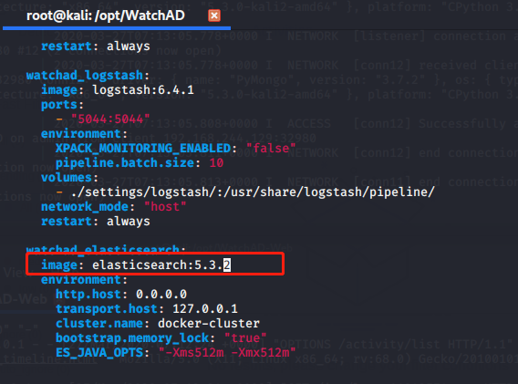
1 2 3 4 5 6 7 8 9 10 11 12 13 14 15 16 创建非root账号，否则运行es会提示使用非root账户 useradd -r watchaduser usermod -s /bin/bash watchaduser useradd -d /home/watchaduser -m watchaduser passwd watchaduser //密码是admin123 安装watchAD服务 python3 WatchAD.py --install -d test.local -s 192.168.10.128 -u test\\administrator -p admin123! 起docker的各种服务 service docker start su - watchaduser sudo docker-compose up 运行WatchAD服务 python3 WatchAD.py --start
安装 winlogbeat 下载解压：
修改文件winlogbeat.yml
1 2 3 4 #----------------------------- Logstash output -------------------------------- output.logstash: # The Logstash hosts hosts: ["192.168.244.129:5044"]
运行：
1 2 3 cd 'C:\Program Files\Winlogbeat' .\install-service-winlogbeat.ps1 Start-Service winlogbeat
web端 1 2 3 4 5 6 git clone https://github.com/0Kee-Team/WatchAD-Web.git 把{WatchAD-Web}/server/config/database_config.py 此文件中的127.0.0.1全改为WatchAD所在的服务器IP。 docker-compose build docker-compose up
然后访问
1 http://127.0.0.1/activity_timeline.html#/
即可进入界面
启动 1 2 3 4 5 6 7 8 9 10 11 12 13 14 15 16 17 18 19 20 21 22 docker： cd /opt/WatchAD/ service docker start su - watchaduser sudo docker-compose up 服务端： cd /opt/WatchAD/ python3 WatchAD.py --start #watchAD虚拟机地址要是变了需要修改{WatchAD}/settings/winlogbeat/winlogbeat.yml中域控的地址 WEB： cd /opt/WatchAD-Web/ docker-compose up kibana cd /opt/kibana-5.3.2-linux-x86_64/ ./bin/kibana WEB界面： http://127.0.0.1/activity_timeline.html#/
规则提取与分析 所有的规则全部在detect目录下，下面分别做总结：
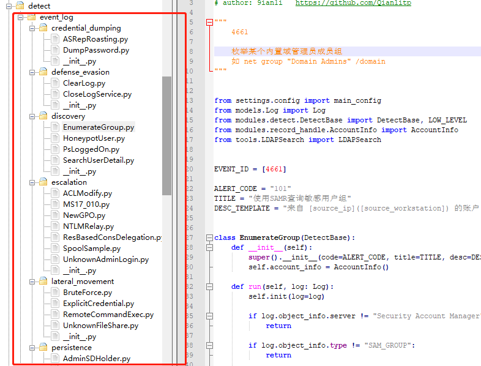
WatchAD的日志结构：
1 2 3 4 5 6 7 8 9 10 11 12 13 14 15 16 17 18 19 20 21 22 23 24 25 26 27 28 29 30 31 32 33 34 35 36 37 38 39 40 41 42 43 44 45 46 47 48 49 50 51 52 53 54 55 56 57 58 59 60 61 62 63 64 65 66 67 68 69 70 71 72 73 74 75 76 77 78 79 80 81 82 83 84 85 86 87 88 89 90 91 92 93 94 95 96 97 98 99 100 101 102 103 104 105 106 107 108 109 110 111 112 "_index": "dc_log_2020.04.23", "_type": "security_log", "_id": "AXGk2y109aA2nixs3l0L", "_score": 1, "_source": { "computer_name": "dc2012.test.local", "opcode": "信息", "task": "其他策略更改事件", "message": """ 已更改 Windows 筛选平台筛选器。 使用者: 安全 ID: S-1-5-19 帐户名称: NT AUTHORITY\LOCAL SERVICE 进程信息: 进程 ID: 740 提供程序信息: ID: {DECC16CA-3F33-4346-BE1E-8FB4AE0F3D62} 名称: Microsoft Corporation 更改信息: 更改类型: 添加 筛选器信息: ID: {C8BB3B0F-13F6-4131-ABA1-E5FB9FA8DA05} 名称: Windows 远程管理(HTTP-In) 类型: 非永久 运行时 ID: 65855 层信息: ID: {7AC9DE24-17DD-4814-B4BD-A9FBC95A321B} 名称: ALE 侦听 v6 层 运行时 ID: 42 标注信息: ID: {00000000-0000-0000-0000-000000000000} 名称: - 其他信息: 权重: 10376293541528731584 条件: 条件 ID: {d78e1e87-8644-4ea5-9437-d809ecefc971} 匹配值: 等于 条件值: 00000000 53 00 79 00 73 00 74 00-65 00 6d 00 00 00 S.y.s.t.e.m... 条件 ID: {0c1ba1af-5765-453f-af22-a8f791ac775b} 匹配值: 等于 条件值: 0x1761 筛选器操作: 允许 """, "thread_id": 608, "record_number": "1209238", "log_name": "Security", "level": "信息", "process_id": 544, "beat": { "version": "6.2.2", "name": "dc2012", "hostname": "dc2012" }, "tags": [ "beats_input_codec_plain_applied" ], "keywords": [ "审核成功" ], "host": "dc2012", "event_data": { "LayerName": "ALE 侦听 v6 层", "ProcessId": "740", "UserSid": "S-1-5-19", "FilterName": "Windows 远程管理(HTTP-In)", "CalloutKey": "{00000000-0000-0000-0000-000000000000}", "Action": "%%16390", "UserName": "NT AUTHORITY\\LOCAL SERVICE", "Weight": "10376293541528731584", "ProviderKey": "{DECC16CA-3F33-4346-BE1E-8FB4AE0F3D62}", "FilterKey": "{C8BB3B0F-13F6-4131-ABA1-E5FB9FA8DA05}", "FilterType": "%%16388", "CalloutName": "-", "ProviderName": "Microsoft Corporation", "Conditions": """ 条件 ID: {d78e1e87-8644-4ea5-9437-d809ecefc971} 匹配值: 等于 条件值: 00000000 53 00 79 00 73 00 74 00-65 00 6d 00 00 00 S.y.s.t.e.m... 条件 ID: {0c1ba1af-5765-453f-af22-a8f791ac775b} 匹配值: 等于 条件值: 0x1761 """, "LayerId": "42", "FilterId": "65855", "ChangeType": "%%16384", "LayerKey": "{7AC9DE24-17DD-4814-B4BD-A9FBC95A321B}" }, "source_name": "Microsoft-Windows-Security-Auditing", "provider_guid": "{54849625-5478-4994-A5BA-3E3B0328C30D}", "type": "wineventlog", "@version": "1", "@timestamp": "2020-04-23T02:17:58.751Z", "event_id": 5447 } },
查询语句：
1 GET /dc_log_2020.04.23/_search
Credential dumping ASRepRoasting 1 2 3 4 5 4768事件 特征： ServiceName krbtgt TicketEncryptionType 0x17 //rc4算法 PreAuthType 0 //预身份认证关闭
命令：
1 2 . .\ASREPRoast.ps1 Get-ASREPHash -Domain test.local -Username xiaom
测试发现成功告警：
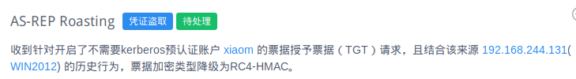
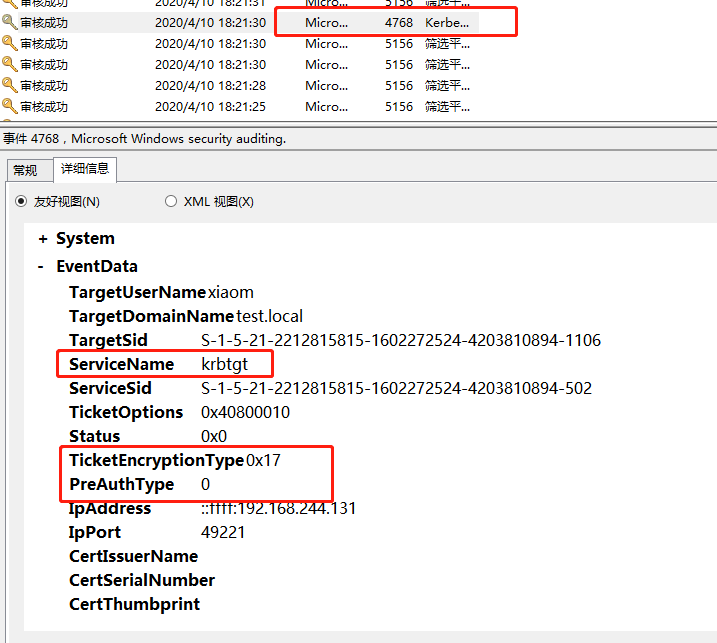
XML：
1 2 3 4 5 6 7 8 9 10 11 12 13 14 15 16 17 18 19 20 21 22 23 24 25 26 27 28 29 30 31 32 33 34 - <Event xmlns ="http://schemas.microsoft.com/win/2004/08/events/event" > - <System > <Provider Name ="Microsoft-Windows-Security-Auditing" Guid ="{54849625-5478-4994-A5BA-3E3B0328C30D}" /> <EventID > 4768</EventID > <Version > 0</Version > <Level > 0</Level > <Task > 14339</Task > <Opcode > 0</Opcode > <Keywords > 0x8020000000000000</Keywords > <TimeCreated SystemTime ="2020-04-10T10:21:30.718875000Z" /> <EventRecordID > 667255</EventRecordID > <Correlation /> <Execution ProcessID ="544" ThreadID ="1064" /> <Channel > Security</Channel > <Computer > dc2012.test.local</Computer > <Security /> </System > - <EventData > <Data Name ="TargetUserName" > xiaom</Data > <Data Name ="TargetDomainName" > test.local</Data > <Data Name ="TargetSid" > S-1-5-21-2212815815-1602272524-4203810894-1106</Data > <Data Name ="ServiceName" > krbtgt</Data > <Data Name ="ServiceSid" > S-1-5-21-2212815815-1602272524-4203810894-502</Data > <Data Name ="TicketOptions" > 0x40800010</Data > <Data Name ="Status" > 0x0</Data > <Data Name ="TicketEncryptionType" > 0x17</Data > <Data Name ="PreAuthType" > 0</Data > <Data Name ="IpAddress" > ::ffff:192.168.244.131</Data > <Data Name ="IpPort" > 49221</Data > <Data Name ="CertIssuerName" /> <Data Name ="CertSerialNumber" /> <Data Name ="CertThumbprint" /> </EventData > </Event >
绕过DumpPassword 远程WMIC VSSCopy 1 2 3 wmic /node:dc2012 /user:test\administrator /password:admin123! process call create "cmd /c vssadmin create shadow /for=C: 2>&1" wmic /node:dc2012 /user:test\administrator /password:admin123! process call create "cmd /c copy \\?\GLOBALROOT\Device\HarddiskVolumeShadowCopy1\Windows\NTDS\NTDS.dit C:\ntds.dit 2>&1"
1 2 3 4 5 6 7 8 9 10 11 最终事件ID：8222事件 事件流： 4688 -> 4688 -> 4904 -> 8222 向前查找： 4904日志： get_term_statement("event_data.ProcessName.keyword",r"C:\Windows\System32\VSSVC.exe"), get_term_statement("event_data.AuditSourceName.keyword", "VSSAudit") 4688日志： get_term_statement("event_data.NewProcessName.keyword",r"C:\Windows\System32\VSSVC.exe") or get_term_statement("event_data.NewProcessName.keyword",r"C:\Windows\System32\vssadmin.exe")
4688日志为进程创建，上面命令执行后会触发
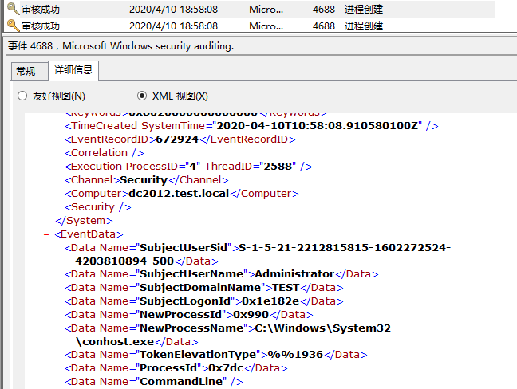
4904日志
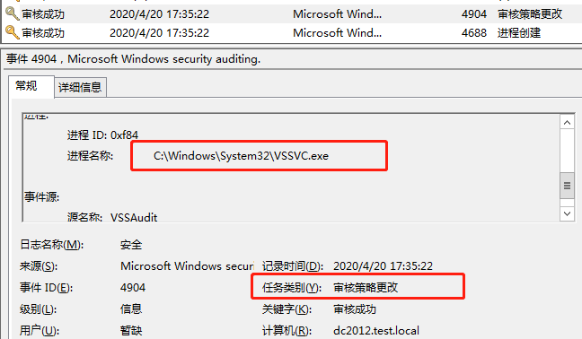
进程名称为VSSVC.exe
8222日志没有产生，网上有个链接说的8222产生于创建卷影副本的时候：
https://jpcertcc.github.io/ToolAnalysisResultSheet/details/vssadmin.htm
远程Invoke-mimikatz 1 2 3 4 5 6 7 8 9 10 11 12 13 14 15 16 17 最终事件ID：4674事件 事件流： 4656 -> 4674 -> 4688 -> 4674 <Data Name="ProcessName">c:\windows\system32\wbem\wmiprvse.exe</Data> <Data Name="ObjectName">\registry\machine\software\microsoft\windows nt\currentversion\perflib</Data> 向前查找： 4688日志：//进程创建 get_term_statement("event_data.NewProcessName.keyword",r"C:\Windows\System32\wbem\WmiPrvSE.exe") 4674日志：//敏感权限使用 get_term_statement("event_data.SubjectUserName.keyword", user_name), get_term_statement("event_data.ProcessName.keyword",r"C:\Windows\System32\wsmprovhost.exe"), get_match_must_all("event_data.ObjectName",r"\REGISTRY\MACHINE\SYSTEM\ControlSet001\services\WinSock2\Parameters"),) 4656日志： get_term_statement("event_data.ProcessName.keyword",r"C:\Windows\System32\wsmprovhost.exe")get_match_must_all("event_data.ObjectName",r"\REGISTRY\MACHINE\SOFTWARE\Microsoft\Windows\CurrentVersion\WSMAN"),)
使用mimikatz.exe进行Dcsync没发现告警：查看日志没看到4674日志
远程Invoke-NinjaCopy 命令：
1 2 . .\Invoke-NinjaCopy.ps1 Invoke-NinjaCopy -Path "c:\windows\ntds\ntds.dit" -ComputerName "dc2012" -LocalDestination "c:\ntds.dit"
1 2 3 4 5 6 7 8 9 10 4658事件 向前查找： 4656日志： get_term_statement("event_data.SubjectUserName.keyword", user_name), get_match_must_all("event_data.ObjectName",r"\REGISTRY\MACHINE\SOFTWARE\Microsoft\Windows\CurrentVersion\WSMAN"), get_term_statement("event_data.ProcessName.keyword",r"C:\Windows\System32\wsmprovhost.exe") 4688日志：//进程创建 get_term_statement("event_data.NewProcessName.keyword",r"C:\Windows\System32\wsmprovhost.exe")
4658事件：https://www.manageengine.com/products/active-directory-audit/kb/object-access-events/event-id-4658.html
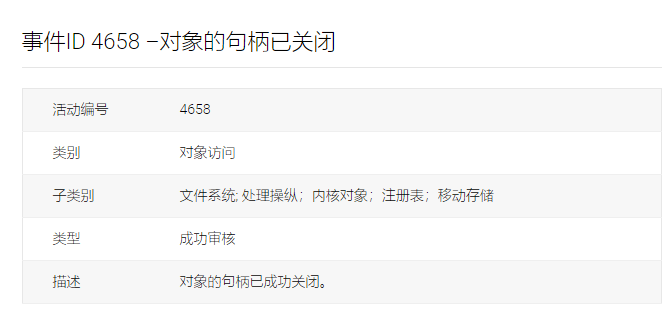
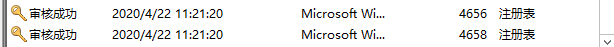
4656和4658日志会产生，4688日志也产生了，但是没有告警
Defense evasion 绕过ClearLog 规则会提取SubjectUserSid、SubjectUserName、SubjectDomainName等内容做展示。
从kibana上查看发现可以看到对应日志：
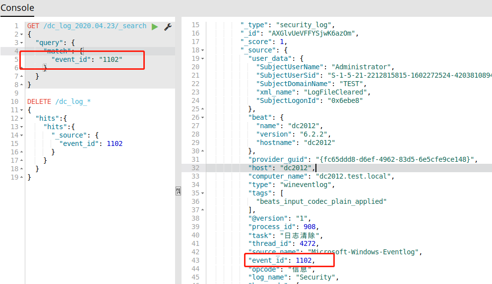
会产生1102事件，但是不会产生告警。
凯东分析原因为：
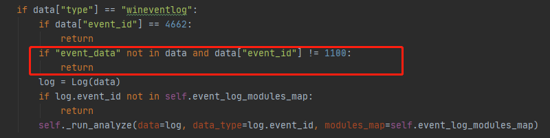
在整个data中搜索索event_data，但是整一条不存在event_data字段（上面的日志可见。）
绕过CloseLogService https://docs.microsoft.com/zh-cn/windows/security/threat-protection/auditing/event-1100
关闭服务的话直接在服务中搜索Windows Event Log服务，然后禁用即可：
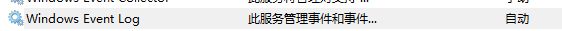
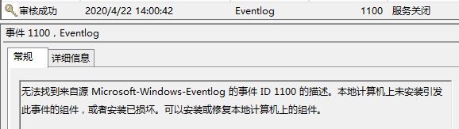
可以看到这里有Eventlog日志产生
Discovery 有日志没告警EnumerateGroup 1 2 3 4 5 枚举某个内置域管理员成员组 如 net group "Domain Admins" /domain 事件ID 4661 https://docs.microsoft.com/zh-cn/windows/security/threat-protection/auditing/event-4661
检测策略：
1 2 1、如果账号是管理员发起的，直接忽略 2、判断账号是否为Users
执行net group “Domain Admins” /domain未告警，产生了4661日志，并且是Users用户执行的
改进 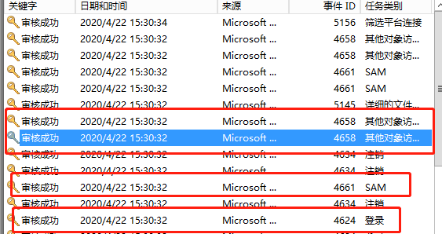
HoneypotUser 蜜罐账号活动
1 EVENT_ID = [4768, 4769, 4770, 4771, 4776, 4624, 4625, 4648]
新增思路，在蜜罐上布置蜜饵
思路二，钓鱼邮件，先发蜜饵，再发能够拿到shell的钓鱼文件
有日志未告警PsLoggedOn 策略：
1 2 3 判断"ShareName"需要等于r"\\*\IPC$"否则直接return "RelativeTargetName"等于"srvsvc"，否则return 忽略域管理员访问
命令：
1 .\PsLoggedon64.exe \\dc2012
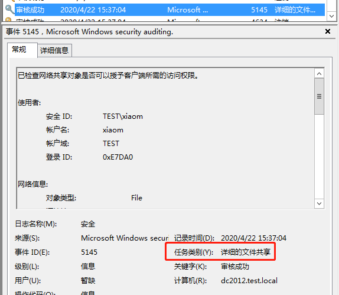
产生了多条对应日志，但是没有告警，RelativeTargetName的值为下面三条：
SearchUserDetail 1 2 3 4 5 6 7 8 9 EVENT_ID = [4661] 会有一个函数调用链： 查找详细的文件共享， winreg -> lsarpc -> srvsvc 忽略查询自身的用户 忽略管理员 忽略Users之外的 忽略敏感用户
Escalation 有日志未告警ACLModify 1 2 EVENT_ID = [5136] 会产生5136日志
策略：
1 2 3 1、判断SID是否为S-1-5-21-开头 2、获取用户信息 3、判断目标是否为管理员权限
测试不告警存在5136日志，未找到原因
MS17-010 1 2 3 4 EVENT_ID = [5140] 使用工具 https://github.com/apkjet/TrustlookWannaCryToolkit 扫描时，会触发该规则 使用原版exp 只触发 5140，且 SubjectLogonId 为一个不存在的值（0x后接5位随机数），即没有任何登录事件与之关联 该检测逻辑不能保证完全准确，单从该日志获取的有限信息只能粗略检测攻击，存在误报的可能性（目前内部观察未出现误报）。
NewGPO 1 2 3 4 EVENT_ID = [5137] 这里可能存在误报，5137和5136分别是修改和创建目录服务对象，所以不一定是ACL和 5136(S): A directory service object was modified. 5137(S): A directory service object was created.
这里实际同时触发了5136和5137两个日志
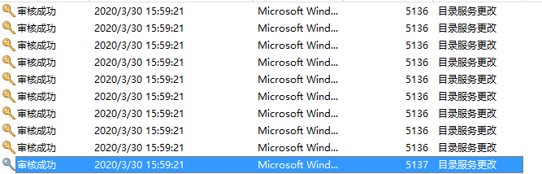
在域控上直接创建产生了告警
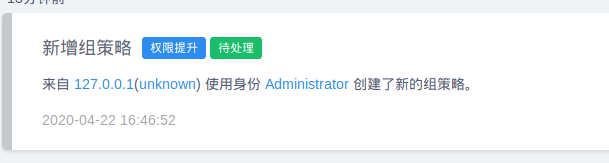
NTLMRelay 1 2 3 4 5 6 7 8 9 10 11 12 13 EVENT_ID = [4624] 检测 NTLM 中继认证到域控的行为 已知特点如下： 1. 使用NTLM协议进行验证 2. 来源主机名为被中继NTLM请求的最初请求 3. 来源IP为中继攻击者IP 4. NTLM v1 更容易受到攻击，NTLM v2可开启签名防止篡改和中继 根据历史记录情况 判断IP和主机名的对应关系是否一致 因为IP经常变动，不建议对所有的请求进行比对，暂时只对固定的敏感机器进行检测
策略：
1 2 3 4 5 6 1、没有IP地址，直接return 2、判断来源主机是否为敏感主机，如果不是直接return 3、如果是主机名，则根据主机名查询IP地址 4、二次确认，如果上次认证IP与当前IP不相同，则对主机名进行解析，判断IP是否相等 resolver_ips = self._get_host_ip(log) 判断两次请求的IP地址是否相同。
ResBasedConsDelegation 1 2 3 4 5 EVENT_ID = [5136] 已修改目录服务对象,和ACL使用的同一个日志 一般RBCD利用会对下面的LDAP的值做修改 AttributeLDAPDisplayName: msDS-AllowedToActOnBehalfOfOtherIdentity
1 2 3 4 5 6 7 8 9 10 11 12 13 14 15 OpCorrelationID {5E009BAB-3CF8-4BC3-8F5A-A92657546634} AppCorrelationID - SubjectUserSid S-1-5-21-2212815815-1602272524-4203810894-1106 SubjectUserName xiaom SubjectDomainName TEST SubjectLogonId 0x1b8484 DSName test.local DSType %%14676 ObjectDN CN=DC2012,OU=Domain Controllers,DC=test,DC=local ObjectGUID {8806E7FC-75A2-4396-A328-9787AFD784DB} ObjectClass computer AttributeLDAPDisplayName msDS-AllowedToActOnBehalfOfOtherIdentity AttributeSyntaxOID 2.5.5.15 AttributeValue O:BAD:(A;;CCDCLCSWRPWPDTLOCRSDRCWDWO;;;S-1-5-21-2212815815-1602272524-4203810894-2106) OperationType %%14674
策略：
1 2 3 4 5 6 查询拥有特殊DACL权限的SID列表 查询历史委派记录 不存在记录 则新建 并直接告警 存在记录且不变，退出 存在记录 对比历史的sid 无新增 更新记录 退出 存在记录 有新增 更新记录 告警
使用下面命令修改了两次，没有看到告警：
1 Set-ADComputer dc2012 -PrincipalsAllowedToDelegateToAccount testrbcd$
总结为如果创建新的computer对象，则会产生5136日志，直接更改现有的computer对象不会产生，会有4742和4624两个日志产出
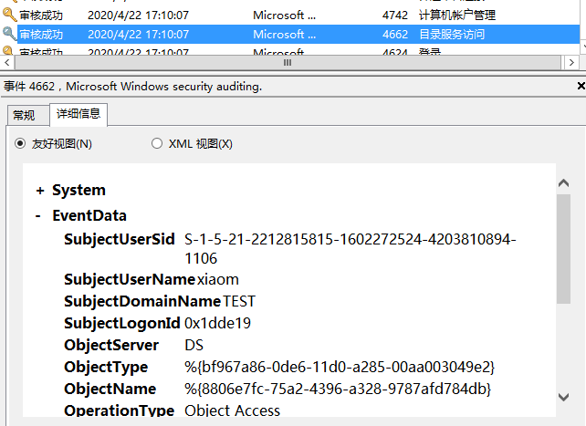
确认之后发现如果有更改则是5136(目录服务查询)，不更改则是4662(目录服务更改)
SpoolSample 1 2 EVENT_ID = [5145] 已检查网络共享对象以查看是否可以向客户授予所需的访问权限???
绕过UnkownAdminLogin 1 2 3 4 5 6 7 8 9 """ 4672 特殊登录 提权检测 分析当前特殊登录的账号是否在管理员账号列表中，如果不在则告警 目前已知的提权漏洞为 MS14-068 """
1 .\MS14-068.exe -u xiaom@test.local -s S-1-5-21-2212815815-1602272524-4203810894-1106 -d dc2012.test.local -p admin1234!
产生了对应日志：
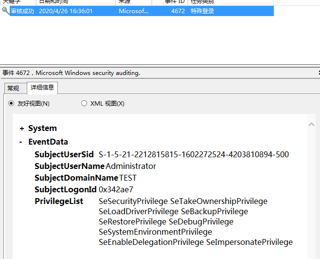
清除日志之后测试产生的所有日志：
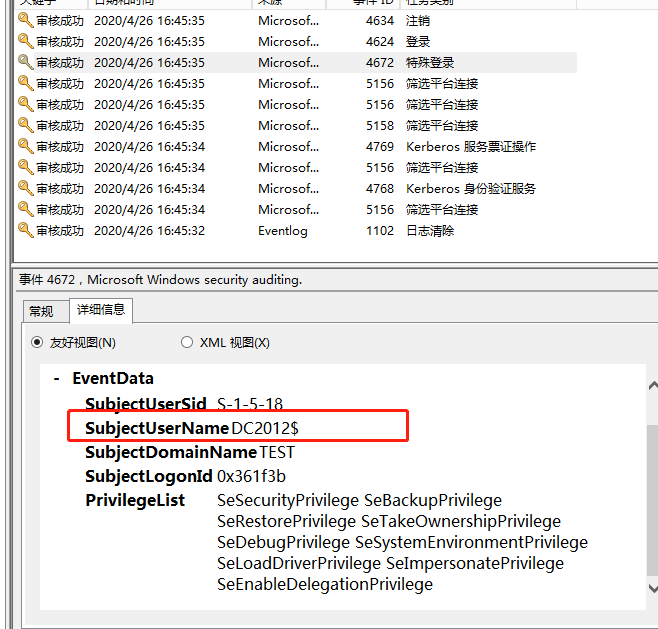
可能是这个原因导致没被return，原代码其中一个判断条件
1 2 3 4 5 if user_name.endswith("$" ): domain = get_netbios_domain(domain_name) if user_name[:-1 ] in main_config.dc_name_list[domain]: return
建议直接从流量中检测，应该不会有误报
LateralMovement BruteForce 1 2 3 4 4625 帐户登录失败 4771 Kerberos 预身份验证失败
策略
1 2 3 4 5 6 7 8 event ID为4625时： 判断数据中的AuthenticationPackageName是否为MICROSOFT_AUTHENTICATION_PACKAGE_V1_0，不是则return 忽略机器账户 判断PreAuthType=0 爆破数量大于100个
绕过ExplicitCredential 1 2 3 EVENT_ID = [4648] 使用显式凭据尝试登录 如果日志显示IP日志为localhost，则直接return
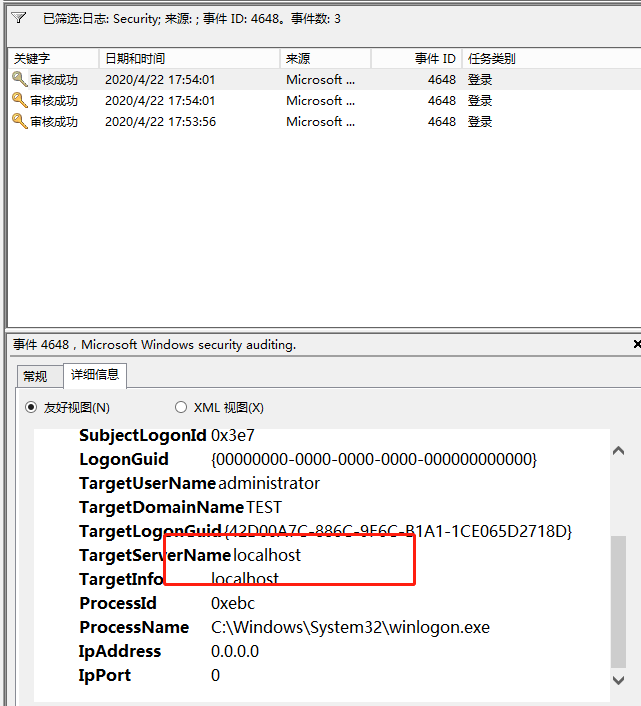
产生了4648日志，但是也是localhost
RemoteCommandExec 1 2 3 4 5 EVENT_ID = [5145, 5142] 5145： 已检查网络共享对象以查看是否可以向客户授予所需的访问权限。 5142： 添加了一个网络共享对象。
策略：
1 2 3 4 5 6 7 8 9 10 11 12 13 14 15 16 17 如果事件ID为5145，则进行下列检查 psexec 5145 ShareName=\ADMIN$ "RelativeTargetName"] == "PSEXESVC.exe" wmiexec 5145 ShareName=\ADMIN$ 在"RelativeTargetName"中正则寻找re.search(r"^__\d{10}\.\d", relative_target_name)，匹配中了return wmi_exec wmiexec_vbs 5142 "ShareName"] == r"\\*\WMI_SHARE" "ShareLocalPath"].lower() == r"c:\windows\temp" smbexec 5145 "ShareName" == r"\\*\C$" "RelativeTargetName" == "__output"
Psexec 使用psexec的时候发现能告警
绕过WMI 1 2 5145 检测 admin 共享开启, 同时 RelativeTargetName 为时间戳形式
1 wmic /node:192.168.244.130 /user:test\administrator /password:admin123! process call create "cmd.exe"
直接执行不告警，查日志没找到5145日志
wmicexec.vbs
1 cscript.exe //nologo wmiexec.vbs /shell 192.168.244.130 test\administrator admin123!
这一步是发现了5145日志的，但是没有看到5142日志
同时有脚本判断ShareLocalPath的路径是否为c:\windows\temp，实验发现C:\也是可以的
1 2 if log.event_data["ShareLocalPath"].lower() == r"c:\windows\temp": return "wmi_exec"
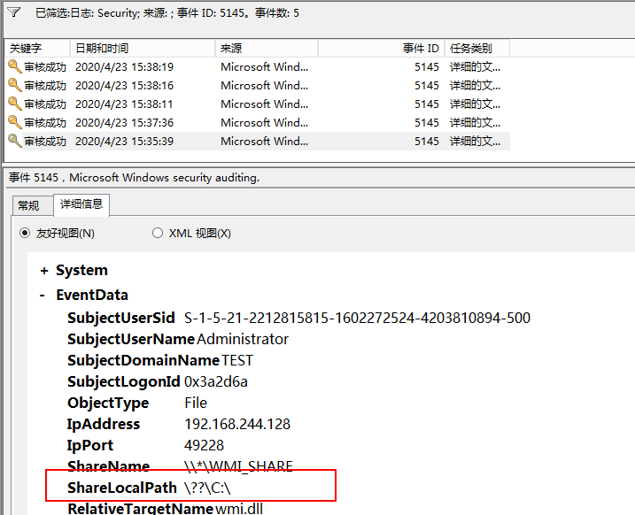
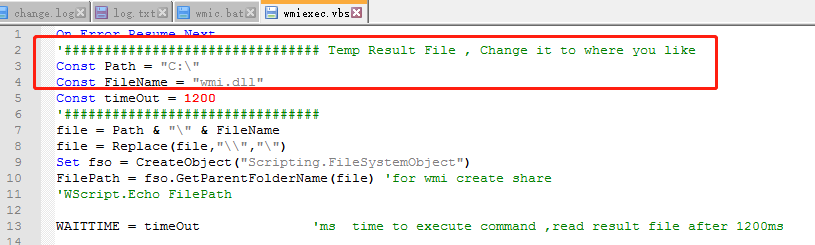
这里的路径应该是可以随意设置
UnkonwFileShare 1 2 relative_target_name不等于["protected_storage", "lsarpc", "samr", "ntsvcs", "NETLOGON"] 检查历史日志，对该名称的共享使用次数，超过10次判断为正常共享
这个发现只要访问域控的就会触发告警
Persistence AdminSDHolder 1 2 3 5136 AdminSDHolder 更改，一般用作权限维持，因为更改情况极少，所以直接告警
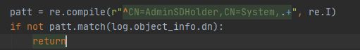
直接在域控上ADSI修改产生告警，使用powerview对AdminSDHolder进行添加ACL
1 2 . .\pv.ps1 Add-DomainObjectAcl -TargetIdentity "CN=AdminSDHolder,CN=System,DC=test,DC=local" -PrincipalIdentity xiaom -Rights All
测试结果发现特征被命中
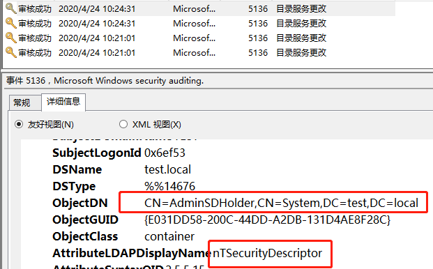
额外补充：在同步时，域控会产生多个4780日志：
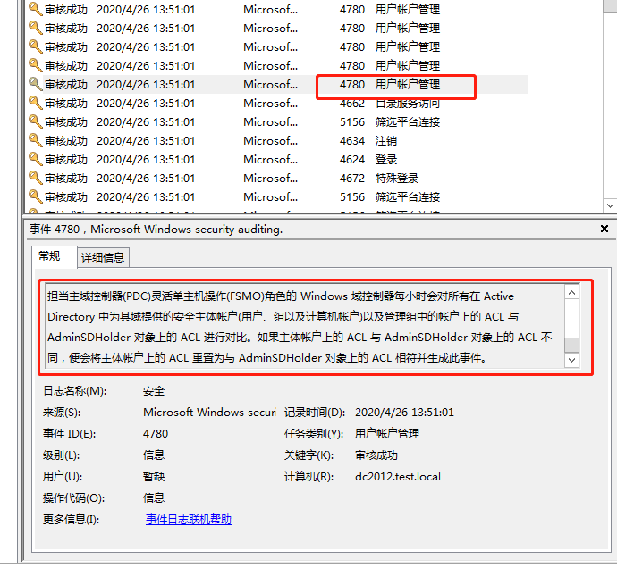
DCShadow 需要跟一下DCShadow的原理
1 2 3 4 5 6 EVENT_ID = [4742, 5137, 5141, 4928] 分为三部分的特征： 1. 计算机SPN修改 (spn modify) 2. 域控创建和删除 (DC server create and delete) 3. 同步监控 (Replication Monitoring)
1 2 3 4 5 SPN修改： event_id 4742 非域控计算机修改SPN为异常值，如果目标服务器为已知的域控计算机名，则忽略 同时判断spn的值是否以"GC/"或者"E3514235-4B06-11D1-AB04-00C04FC2DCD2/"开头
1 2 3 event_id 5137 配置名称空间内创建服务，目标非域控计算机
1 2 3 event_id 5141 配置名称空间内服务删除，目标非域控计算机
凯东记录的：
1 2 3 在NTDS设置、DC服务器创建、DC服务器删除的判断逻辑中，使用了默认域设置的Default-First-Site-Name作为判断列表中的其中一项，真实环境下Site名称都是根据企业自身环境进行命名的，在携程是CNSH、CNNT等，默认Site名称判断导致检测可被绕过 fix：移除Default-First-Site-Name的判断，对dn添加其他路径名称检测
DSRM 1 EVENT_ID = [4794]：尝试设置目录服务还原模式管理员密码（要求在2008 R2和更高版本中启用帐户管理/用户管理子类别审核）。
只对4794日志做了检测
1 2 3 4 1.监控与DSRM密码重置和使用相关的事件日志 4794：试图设置目录服务还原模式管理员密码。 2.监控如下注册表位置的值，当值为 1 或 2时，应引起警示 HKLM\System\CurrentControlSet\Control\Lsa\DSRMAdminLogonBehavior
未绕过
绕过GPODelegation 组策略委派
1 2 3 4 EVENT_ID = [5136] dn字段以"cn=policies,cn=system,"开头 同时会根据SID判断是否为Users用户，如果不是则忽略
但是根据我的判断，这里的Users指的是domain users，不是OU的Users，所以不论是哪个OU的用户，SID的开头都是S-1-5-21-
暂时存在几个问题，一是修改具体组策略的时候DN的内容前面是有UUID的值的：
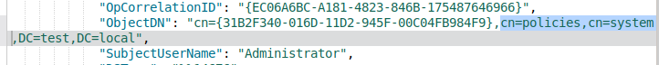
二是即使存在了包含CN=Policies,CN=System开头的日志也没有产生告警，代码中判断了是否为管理员权限：
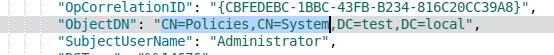
三是ObjectClass不一定全部为Container
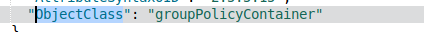
绕过GrantDelegation 1 2 3 4 5 6 7 8 9 10 11 12 13 EVENT_ID = [4738] Kerberos约束委派权限授予 该手法可用作权限维持，通过对某个用户添加高权限的委派 使用_check_high_risk_spn方法对高危SPN做检测 """ 增加约束委派权限的高危SPN检测 1. 包含域控主机名 可直接接管域控 2. 服务名包含 krbtgt 变种金票 3. 服务名包含 LDAP 可导致DCSync 等等 """
设置主机账户的委派发现未触发4738日志，存在4742日志，凯东已经提过了
绕过ModifySensitiveGroup 1 2 3 4 5 6 7 8 EVENT_ID = [4728 //向启用了安全性的全局组中添加成员 , 4732 // , 4756] 新增域管理员 准确一点说，是安全组中新增加了用户 这种情况少见，不论情况均告警，可抄送IT部门协助确认
将xiaom添加到domain admins组发现存在告警
后来发现部分情况会产生4737事件，导致不告警，这里添加adadad到domain admins：
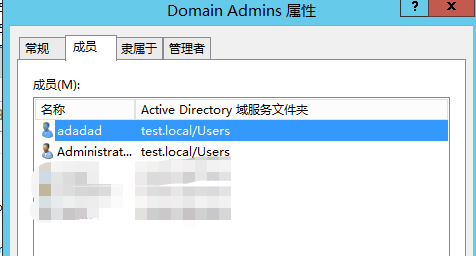
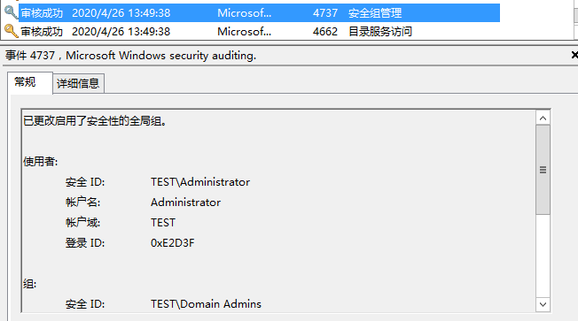
绕过NewServiceInstall 1 2 3 EVENT_ID = [4697] 安装了新的服务 安装新服务属于敏感事件，全部作为低危信息告警
1 2 3 sc create Serv-U binpath= "c:\calc.exe" start= auto displayname= "testcalc" sc delete Serv-U binpath="c:\calc.exe" start= auto displayname= "testcalc"
在windows server 2012是4688事件，没有看到4697事件，未产生告警
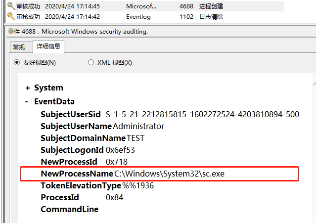
绕过ScheduledTasks 1 2 3 EVENT_ID = [4698] 域控的计划任务创建
1 schtasks /Create /TN TestService1 /SC DAILY /ST 01:02 /TR notepad.exe
可以通过修改原有计划任务实现绕过，windows2012中会默认存在一个计划任务Optimize Start Menu Cache File
http://windows.fyicenter.com/4349_Optimize_Start_Menu_Cache_Files-S-1-5-21-...-1001_Scheduled_Task_on_Windows_8.html
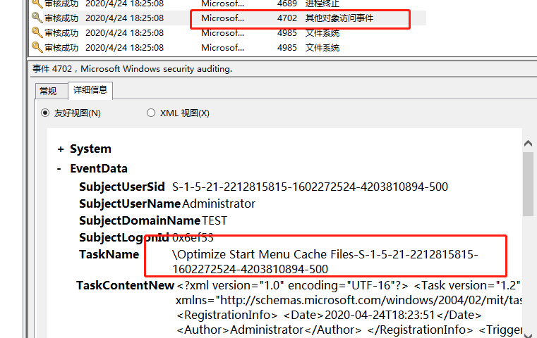
建议将4072也假如检测事件中，防止对Optimize Start Menu Cache File计划任务的修改
绕过SidHistory 1 2 3 4 5 6 7 8 9 10 11 EVENT_ID = [4765, 4766] SIDHistory 权限维持 只适用于 Windows Server 2003, Windows Server 2003 R2, Windows Server 2003 with SP1, Windows Server 2003 with SP2 目前不考虑其它情况 出现即告警
利用方式：http://t3ngyu.leanote.com/post/7697c6e55644
1 2 3 4 5 6 7 privilege::debug sid::query /sam:xiaom sid::patch sid::add /sam:xiaom /new:S-1-5-21-2212815815-1602272524-4203810894-500 sid::clear /sam:xiaom
windows server 2012实验产生的是5136日志：
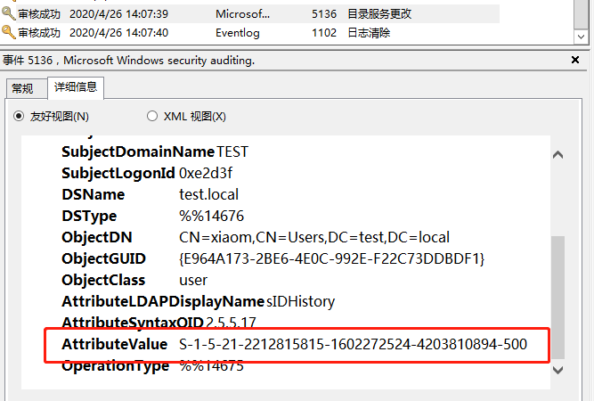
也会产生4738日志：
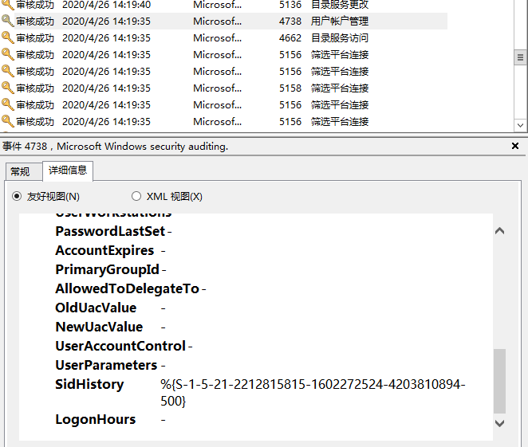
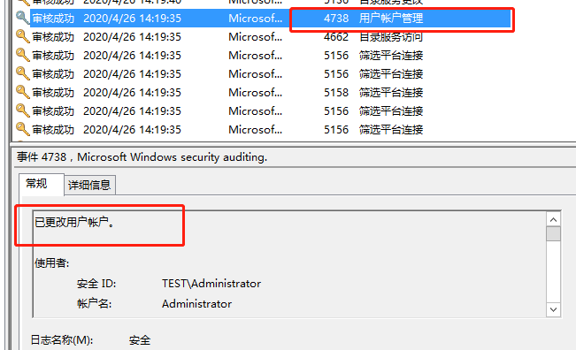
SkeletonKeys 1 2 3 4 5 6 EVENT_ID = [4771] 万能钥匙 主动检测 PreAuthType = 0 同时 Status 为 0xe 配合 scripts/skeleton_key_scan 进行定时扫描
skeleton_key_scan脚本：
1 扫描每个域控，使用AES256加密发送 AS_REQ ，如果该域控被注入了万能钥匙，则会触发4771事件，错误代码为 0xe
1 2 3 4 5 6 域控执行： privilege::debug misc::skeleton 域内主机可以通过默认的mimikatz密码登录 net use \\dc2012\c$ /user:"test\administrator" "mimikatz"
[https://wooyun.js.org/drops/%E5%9F%9F%E6%B8%97%E9%80%8F%E2%80%94%E2%80%94Skeleton%20Key.html] (https://wooyun.js.org/drops/域渗透——Skeleton Key.html)
主动扫描检测，但是扫描的时间在代码中没找到，未发现特别的日志